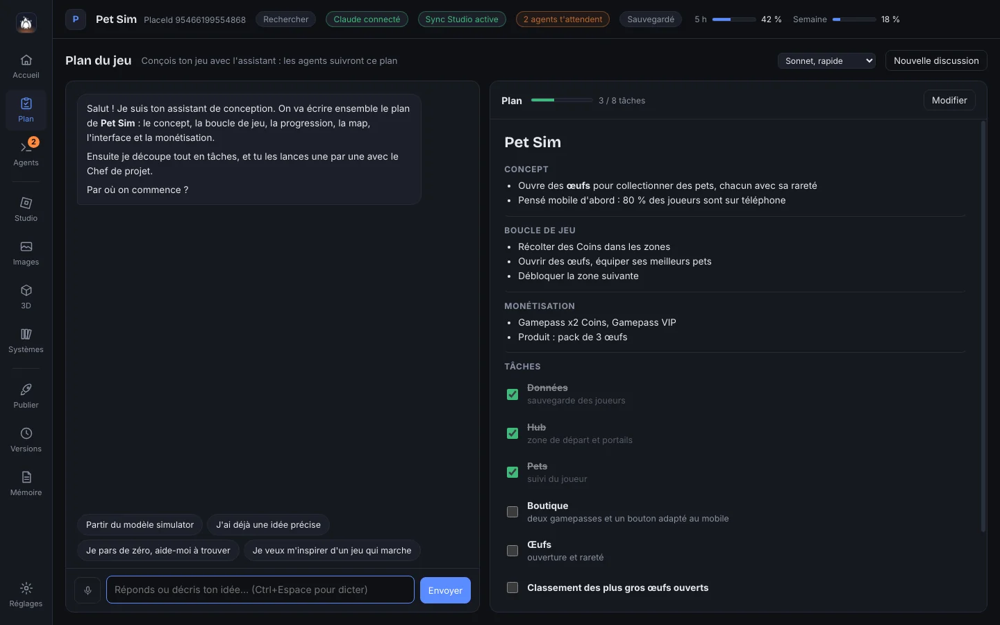
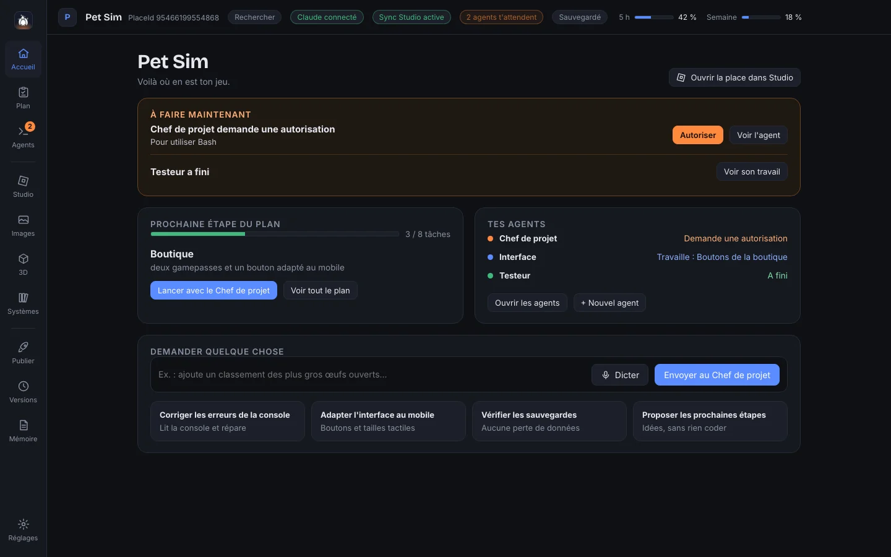
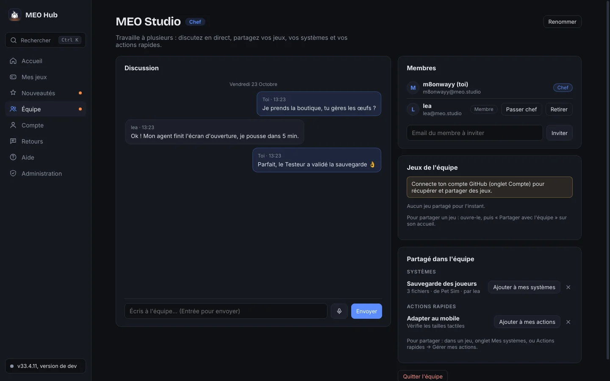

Tes agents codent ton jeu Roblox. Toi, tu diriges. Your agents build your Roblox game. You call the shots.
MEO Hub fait travailler plusieurs agents Claude Code sur ton jeu en même temps, chacun sur sa tâche, avec le code envoyé tout seul dans Roblox Studio. Tu vois qui fait quoi, tu réponds d'un clic, et tu peux tout annuler. MEO Hub runs several Claude Code agents on your game at once, each on its own task, with the code pushed straight into Roblox Studio. You see who is doing what, answer in one click, and can undo anything.
Windows 10 et 11 · achat unique, mises à jour comprisesWindows 10 and 11 · one-time purchase, updates included

Une journée de dev avec MEO HubA dev day with MEO Hub
-
Tu écris le plan du jeuYou write the game plan
Un assistant te pose les bonnes questions et range tout : concept, boucle de jeu, monétisation, puis une liste de tâches.An assistant asks the right questions and organises everything: concept, game loop, monetisation, then a task list.
-
Tu lances une tâcheYou launch a task
Le Chef de projet la découpe et la confie à des spécialistes (scripts, interface, map, test) qui travaillent en parallèle.The Project lead splits it and hands it to specialists (scripts, UI, map, testing) who work in parallel.
-
Tu réponds quand on te demandeYou answer when asked
Une autorisation, une question : un son, une pastille, et les boutons Autoriser ou Refuser. Même depuis ton téléphone.A permission, a question: a sound, a badge, and Allow or Deny buttons. Even from your phone.
-
Le jeu avance dans StudioThe game moves forward in Studio
Le code part tout seul dans Roblox Studio. Un changement ne te plaît pas ? Tu vois ce que l'agent a modifié, et tu annules.The code flows into Roblox Studio on its own. Don't like a change? See what the agent edited, and undo it.
Un plan que les agents suivent vraimentA plan your agents actually follow
Le plan du jeu vit dans le projet. Les agents le lisent avant de coder et cochent les tâches qu'ils terminent : tu sais toujours où en est ton jeu.The game plan lives inside the project. Agents read it before coding and tick off the tasks they finish, so you always know where your game stands.

L'accueil te dit quoi faire maintenantThe home screen tells you what to do next
Les agents qui t'attendent, la prochaine tâche du plan, l'état de chacun, et une zone pour demander quelque chose, à l'écrit ou à la voix.The agents waiting for you, the next task in the plan, everyone's status, and a box to ask for something, typed or spoken.

À plusieurs sur le même jeuSeveral people, one game
Crée ton équipe et invite tes devs. Le code de chaque jeu partagé se synchronise tout seul, vos agents savent ce que font ceux des autres, et vous discutez en direct.Create your team and invite your devs. Each shared game's code syncs on its own, your agents know what the others' agents are doing, and you chat live.
- Si deux personnes touchent les mêmes lignes, rien n'est perdu : un agent fusionne les deux versions.If two people touch the same lines, nothing is lost: an agent merges both versions.
- Systèmes et actions rapides partagés d'un clic.Systems and quick actions shared in one click.
- Une seule synchro Studio à la fois, pour ne pas se marcher dessus.One Studio sync at a time, so nobody steps on anyone.

Ton téléphone devient la télécommandeYour phone becomes the remote
MEO Hub mobile suit tes agents depuis le canapé : autoriser, répondre, lancer une tâche, voir les changements. Sans appli à installer depuis un store : un QR code suffit.MEO Hub mobile follows your agents from the couch: allow, reply, launch a task, review changes. No store app needed: a QR code is enough.

Et tout ce qu'on attend d'un vrai atelierAnd everything a real workshop needs
- Annuler un agentUndo an agent
- Remet ses fichiers comme avant ta demande, sans toucher au travail des autres.Puts its files back as they were before your request, without touching anyone else's work.
- Versions automatiquesAutomatic versions
- Une sauvegarde toutes les 45 secondes, et un retour en arrière en un clic.A save every 45 seconds, and one-click rollback.
- Dictée sur ton PCDictation on your PC
- Maintiens Ctrl+Espace et parle : la voix est transcrite sur ta machine, rien ne part en ligne.Hold Ctrl+Space and talk: speech is transcribed on your machine, nothing goes online.
- Moins de tokensFewer tokens
- Carte du code, mémoire du projet et missions suivies sans rien coûter : tes limites Claude durent plus longtemps.Code map, project memory and free mission tracking: your Claude limits last longer.
- Vérification avant publicationPre-release check
- Repère les pertes de données, la triche possible, le lag et le code de test oublié, gratuitement.Spots data loss, possible exploits, lag and leftover test code, for free.
- Mes systèmesMy systems
- Garde un système qui marche (sauvegarde, pets, boutique) et réutilise-le dans ton prochain jeu.Keep a system that works (saving, pets, shop) and reuse it in your next game.
- Images et 3DImages and 3D
- Gemini et Blender intégrés : tes agents peuvent mettre une image dans le jeu eux-mêmes.Gemini and Blender built in: your agents can put an image into the game themselves.
- Notes de mise à jourUpdate notes
- Écrites pour tes joueurs en français et en anglais, prêtes pour Discord.Written for your players in French and English, ready for Discord.
- Demandes programméesScheduled requests
- Lance une tâche plus tard, par exemple quand ta limite Claude revient.Run a task later, for example when your Claude limit resets.
Ce qu'il te fautWhat you need
- Un PC Windows 10 ou 11.A Windows 10 or 11 PC.
- Ton propre abonnement ClaudeYour own Claude subscription (Pro ou Max). Les agents l'utilisent : MEO Hub ne revend pas d'accès à Claude.(Pro or Max). The agents use it: MEO Hub does not resell Claude access.
- Roblox Studio, avec son connecteur MCP (MEO Hub t'aide à l'installer)., with its MCP connector (MEO Hub helps you set it up).
Une licence, pour toujoursOne licence, forever
Paiement unique. Toutes les mises à jour comprises.One-time payment. All updates included.
- MEO Hub sur ton PC, avec toutes ses fonctionsMEO Hub on your PC, with every feature
- MEO Hub mobileMEO Hub mobile
- Le mode Équipe (chaque membre a sa licence)Team mode (each member has their own licence)
- Ta clé arrive par email juste après l'achatYour key arrives by email right after purchase
La vente ouvre très bientôt.Sales open very soon.
FAQ
Est-ce que je dois savoir coder ?Do I need to know how to code?
Non. Tu décris ce que tu veux, les agents écrivent le code. Savoir lire un peu de Luau aide à vérifier, mais ce n'est pas obligatoire.No. You describe what you want, the agents write the code. Reading a bit of Luau helps you check, but it isn't required.
Pourquoi faut-il mon propre abonnement Claude ?Why do I need my own Claude subscription?
MEO Hub pilote Claude Code avec ton compte. Tu gardes la main sur tes limites et ton abonnement, et MEO Hub n'a jamais accès à tes identifiants Claude.MEO Hub drives Claude Code with your account. You keep control of your limits and subscription, and MEO Hub never sees your Claude credentials.
Est-ce que ça marche sur Mac ?Does it work on Mac?
Pas encore : MEO Hub est fait pour Windows 10 et 11.Not yet: MEO Hub is built for Windows 10 and 11.
Mon code reste à moi ?Does my code stay mine?
Oui. Ton jeu est un dossier sur ton PC. En mode Équipe, il est rangé dans un dépôt GitHub privé, sur ton compte.Yes. Your game is a folder on your PC. In Team mode, it lives in a private GitHub repository, on your account.
Combien de PC avec une licence ?How many PCs per licence?
La licence est liée à ton compte MEO Hub : connecte-toi sur ton PC fixe ou ton portable. Pour une équipe, chaque membre a sa propre licence.The licence is tied to your MEO Hub account: sign in on your desktop or your laptop. In a team, each member has their own licence.
Et si ça ne me convient pas ?What if it isn't right for me?
Écris-nous dans les 14 jours suivant l'achat : on te rembourse.Write to us within 14 days of purchase and we'll refund you.